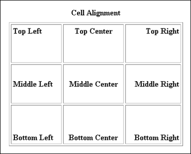

HTML tables: cell alignment, colours, images
Aligning contents in a cell
You can align the contents in a cell, so they look more presentable. To align a cells contents, the ALIGN attribute is used in the TD part of the tag. To centre-align our headings, the code would be this:
<TR>
<TD align="center">CSS Property</TD>
<TD align="center">Internet Explorer</TD>
<TD align="center">FireFox</TD>
<TD align="center"> Chrome</TD>
<TD align="center">Safari</TD>
<TD align="center">Opera</TD>
</TR>
The other two Horizontal alignment options are "Left" and "Right".
Alignment can also be vertical. You use the VALIGN tag for vertical alignment. The positions for vertical alignment are: TOP, MIDDLE and BOTTOM.
<TD VALIGN = Top>
<TD VALIGN = Middle>
<TD VALIGN = Bottom>
You can combine horizontal and vertical alignment to give nine positions in all:
<TD VALIGN = Top Align = Left>
<TD VALIGN = Top Align = Center>
<TD VALIGN = Top Align = Right>
<TD VALIGN = Middle Align = Left>
<TD VALIGN = Middle Align = Center>
<TD VALIGN = Middle Align = Right>
<TD VALIGN = Bottom Align = Left>
<TD VALIGN = Bottom Align = Center>
<TD VALIGN = Bottom Align = Right>
In a browser, here's what a table of all nine positions would do to text:

Changing the Background Colour of Tables and Cells
Individual cells can have their background colour changed. The background colour of the entire table can be changed, too. To change the colour of the entire table, just add the BGCOLOR tag to the TABLE tag. Like this:
<TABLE Bgcolor = "Blue">
You can add a splash of colour to individual cells. The BGCOLOR attribute is just added to the TD tag whose colour you want to change. Like this:
<TD Bgcolor= "Yellow">Safari</TD>
Using Images in Tables
Images can be used in tables, either as the background image of the table, or in individual cells.
<TABLE Background = "image_name.jpg">
<TD Background = "image_name.jpg">
Note that the attribute is BACKGROUND. After an equal sign you type the name of the image you want to use.
In the next section, you'll leatn about the HTML 5 table elements.